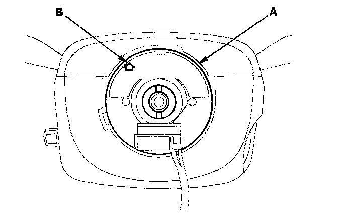
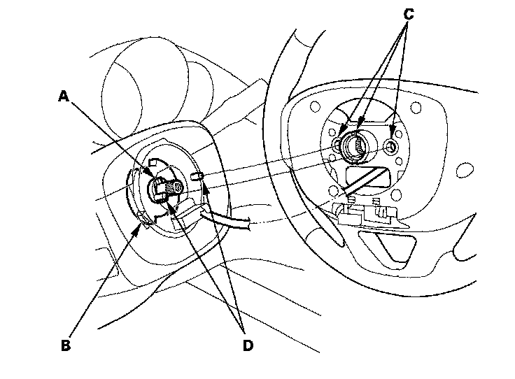
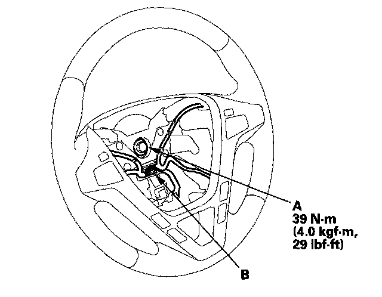

Steering Wheel Installation
Steering Wheel Installation1. Before installing the steering wheel, make sure the front wheels are aligned straight ahead, then center the cable reel (A). Do this by first rotating the cable reel clockwise until it stops. Then rotate it counterclockwise about three full turns. The arrow mark (B) on the cable reel label should point straight up.

2. Position the two tabs (A) of the turn signal canceling sleeve (B) as shown. Install the steering wheel on to the steering column shaft, making sure the steering wheel hub (C) engages the pins (D) of the cable reel and tabs of the turn signal canceling sleeve. Do not tap on the steering wheel or steering column shaft when installing the steering wheel.

3. Install the steering wheel bolt (A) and tighten it to the specified torque. Connect the cable reel subharness connector (B). Make sure the wire harness is routed and fastened properly.

4. Install the driver's airbag, and confirm that the system is operating properly.
5. Reconnect the negative battery cable to the battery, and do these tasks:
^ Turn the ignition switch ON (II); the SRS indicator should come on for about 6 seconds and then go off.
^ Enter the anti-theft code for the audio system and the navigation system (if equipped).
^ Make sure the horn and turn signal switches work properly.
^ Make sure the steering wheel switches work properly.
^ Make sure the steering wheel is centered.
^ Do the steering column position memorization.